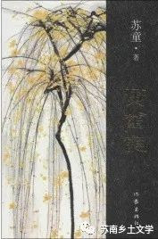

《黄雀记》
《黄雀记》是苏童所作的一部长篇小说。小说讲述了一桩上世纪80年代发生的青少年强奸案引发的命运纠结史。香椿树街鼎鼎有名的纨绔子弟柳生强奸了一名少女，却让普通少年保润替其坐牢。最终，保润杀了柳生。《黄雀记》延续了苏童惯常的小人物、小地方的叙事风格和节奏。主题涉及罪与罚，自我救赎，绝望和希望。
一、时代背景
1.红卫兵
似乎被霜雪覆盖，原来饱满的后脑勺是空瘪的，隐隐可见一个锯齿形的疤痕，形状怪异，听说是以前被红卫兵用皮鞋跟砸出来的，那个疤痕潜伏多年，或许就是祖父魂灵出逃的出口。
注：红卫兵是指“文化大革命”中，大、中学生成立的群众组织，也指其成员。是文化大革命时期在极“左”思潮支配下产生的以青少年为主体的一种群众性组织。
二、封建迷信传统习俗
1.喊魂
你家再这么冷落祖宗，以后不是你闺女一个人丢魂，你们全家人解手都要找松树，不见松树谁也解不了手。她爹娘听了神汉的计策，牵着家里的所有儿女和牲畜跑到祖坟上，杀鸡宰羊，喊她的魂，喊了一天一夜，第二天早晨她就好了，又愿意坐到茅缸上去解手了。
2.祖坟归位
孟师傅说原来你跑到我家门口搞科学试验啊，你家祖宗的尸骨，怎么可以埋到我家门口来？这不是骑在我头上拉屎么？你自己说，你骑我头上来拉屎，配不配？
3.扫墓：苏南扫墓传统
人家告诉他们墓地也是分三六九等的，有豪华型普通型经济型，造价不一，保润父亲的墓地是经济型的，不能在正南方向的阳坡上找，要去坡后面找。
保润比较着两块墓碑，发现父亲的名字是黑色的，祖父的名字是红色油漆描的。黑字代表人死了，已经进来了，红字代表人还健在，还没进来呢
有个老头带着塑料桶过来，指挥他们埋置骨灰盒。他们按照老头的吩咐，把骨灰盒放进石屉里，用桶里的泥灰糊好了所有缝隙。老头用瓦刀修了修边，说，好了，泥灰十五块钱，人工五块钱，一共二十块钱。
只要付二十块钱。无需动土，也无需填埋，如此轻易完成一个儿子的大业，出乎保润的预料。他茫然地问柳生，这就好了？柳生说，是好了，你以为要掘土挖墓呢？知道现在是什么社会？现在是服务型社会了，什么都讲求简单快捷。
4.烧香辟邪
由于郑姐坚信菩萨是郑老板最后的希望，香火是菩萨的食粮，对菩萨有诚心，便不可断菩萨之炊，后来她勉强接受了水塔改建香火堂的方案，只是要求工程马上开工，限期十天之内竣工，以便郑老板及时给菩萨进香。
三、自然环境
1.建筑：木榫结构
木榫结构：（1973年，距离宁波市区约20公里的余姚市河姆渡镇发现了距今六、七千年的新石器文化遗址，人们称之河姆渡遗址，在遗址人们发现了大量榫卯结构的木质构件。）
从楼下祖父的房间里传来了奇怪的噪音，一把铁锤持续试探着木榫的结构，笃，笃，笃。这试探其实类似诱杀，木料与铁锤的对峙并不长久，嗒地一声，一个古老而顽固的木榫被敲落了，阁楼上的空气发出诡秘的呼应。八十八对木榫都在忙于告别，它们相处百年，多少有点厌倦，榫头与榫槽的告别共计一百七十六种。
四、传统手艺、文化
1.绳结
研究最完美的捆绑工艺。春天是保润多产的季节，祖父身上的绳结，最多的一天出现了六种花样
那绳子由绿色和白色两种纤维揉制而成，一指粗细，杂货店里可以随便买到，并没有什么稀罕之处。值得一说的是绳结的工艺结构，它既有独创性，又有实用性，线条漂亮大方，
2.卖身募捐
少年们围着她哄闹，有人朝那只塑料盆里扔硬币，嗒地一声，她嫣然一笑，向上拉起毛衣，亮出两只并不丰满的乳房，以示感谢。有少年问，柳娟你募了钱干什么？黑卵这一拉扯，引起了柳娟疯狂的尖叫，别碰我，只给看，不让碰！瞥见柳娟雪白的乳房左侧，有五个暗红色的瘢点，形状恰好像一朵桃花。少年们后来跑上城墙俯瞰桃花林，为柳娟乳房上的瘢痕争论不休。有人说那是胎记，有人说是牙痕，保润觉得最可信的是黑卵的说法，黑卵说那是邵兰英用香烟头烫的，她给女儿以必要的惩罚，柳娟出来募捐一次，烫一次，共计五次，正好烫出了一朵桃花的形状。
《黄雀记》可能是不那么乡土的一部小说，但是在其中也有很多元素值得我们去借鉴与参考，例如其中的喊坟、祖坟归位、扫墓传统、烧香辟邪等等封建迷信习俗，在现在的苏南乡村依旧存在，并且我深有体会，老年人落叶归根的传统思想，以及工人帮忙埋置骨灰盒封上骨灰盒要的喜钱，都是苏南地区丧葬文化中的重要部分。
苏童为什么会关注到这些细节，为什么会选择这些习俗来叙述，其实也离不开乡土对他的影响，所以《黄雀记》虽然不那么乡土，但是仍然和乡土小说有相似元素存在。